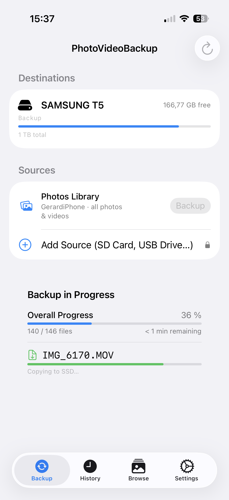
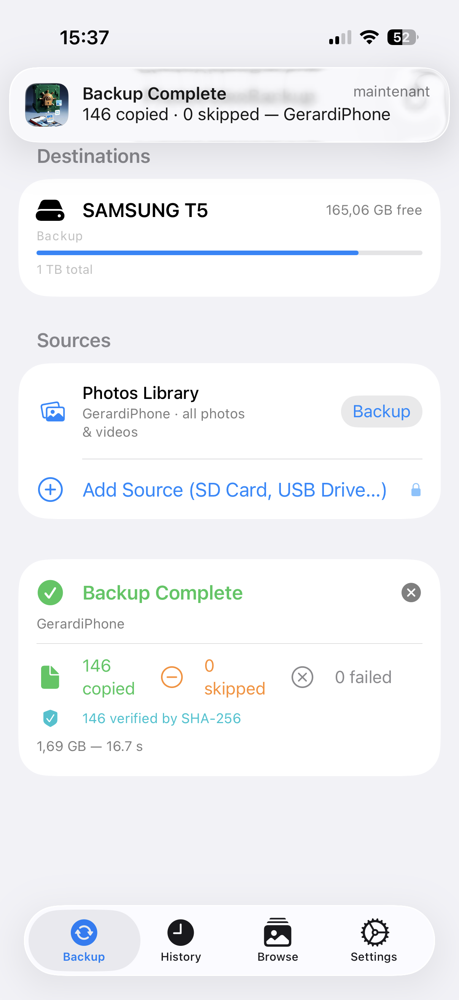

Version 1.0 · iOS
A simple, reliable way to back up your photos and videos to an external SSD.
PhotoVideoBackup copies your photos and videos from your iPhone — or from a camera memory card — to a portable SSD (a fast external hard drive) plugged into your iPhone.
Why use it?
What makes it safe?
Every file copied is verified with a mathematical fingerprint (SHA-256).
If even a single byte is wrong, the app flags it. You will never end up
with a silent, corrupted backup.
| Item | Notes |
|---|---|
| An iPhone with a USB-C port | iPhone 15 or later |
| A USB-C SSD | Any portable SSD with a USB-C cable works. Recommended: Samsung T7, SanDisk Extreme, WD My Passport. |
| A USB-C cable or hub | The cable that came with your SSD is fine. If you also want to plug in an SD card reader at the same time, you need a small USB-C hub. |
| An SD card reader (optional) | Only needed if you want to back up a camera card. Any USB-C SD card reader works. |
Tip: Copying large amounts of video uses battery. Plug your iPhone in or make sure it is well charged before starting.
The very first time you open PhotoVideoBackup, iOS will ask for permission to access your photo library.
Tap Allow Full Access. Without this permission, the app cannot read your photos and videos.
The app only reads your photos to copy them. It never modifies, deletes, or shares them.
Before you can back anything up, you need to tell the app where to save the files — that is, which folder on your SSD to use.
Connect your SSD to your iPhone using its USB-C cable.
Tap the Settings tab at the bottom of the screen (the gear icon).
Both destination slots show “Not configured”. This is normal the first time.
Tap Choose… next to “SSD 1 (primary)”.
A file browser will open. Navigate to your SSD — it will appear in the list of locations. Tap on it to select the top-level folder (or a specific folder inside it if you prefer to keep things organised).
Tap Open in the top-right corner.
The SSD name will now appear in Settings, confirming it is configured. A small red trash icon appears next to it — you can tap it at any time to unconfigure that slot.

Your choice is remembered. You only need to do this once per SSD. The next time you plug the same SSD in, the app will recognise it automatically.
Tap the Backup tab (the house icon at the bottom left).
At the top you will see your SSD with its name, how much space is free, and a bar showing how full it is. Below that is a Sources section.

In the Sources section, find the Photos Library row. It shows your iPhone name (for example “iPhone · all photos & videos”).
Tap the Backup button on that row.
The app will start scanning your photo library and then copying files. You can watch the progress on screen (see Section 7).
First backup takes longer. If you have thousands of photos, expect this to take several minutes or more. Subsequent backups are much faster — the app skips files that are already on the SSD.
This section explains how to back up a memory card from a camera such as a Blackmagic, Insta360 X5, DJI drone, GoPro, or any other camera.
Plug your SD card reader into your iPhone and insert the memory card.
If your SSD is already plugged in, you will need a small USB-C hub to connect both at the same time.
On the Backup tab, tap Add Source (SD Card, USB Drive…) at the bottom of the Sources section.
A file browser will open. Navigate to your SD card and tap Open.
A dialog box will ask you to name this source. The folder name from the card is suggested, but you can type anything — for example Blackmagic, Insta360, or Trip to Japan.
Tap Add.
The source now appears in the list. The app automatically recognises known devices: it shows a camera icon for Insta360 cards, a drone icon for DJI cards, and a memory card icon for everything else.
In the example below, two camera sources have been added alongside the iPhone library:
Tap Backup on the row for your camera source.
Tap the red – button on the left of a source row to remove it from the list. This does not delete any files — it simply removes that card from the app’s list of sources.
While the backup runs, a Backup in Progress panel replaces the completion banner at the bottom of the Backup tab.

Here is what each part means:
| Element | What it tells you |
|---|---|
| Overall Progress | The percentage of the total backup completed, and how many files done out of the total |
| Current file name | The file being processed right now |
| Phase label | What the app is doing at this moment (see below) |
Phases explained simply:
Do not unplug the SSD or the SD card while a backup is running.
When the backup finishes, a Backup Complete banner appears at the bottom of the Backup tab.

| Number | What it means |
|---|---|
| Copied | Files successfully saved to the SSD for the first time |
| Skipped | Files that were already on the SSD — not copied again (this is normal and safe) |
| Failed | Files that could not be copied (rare — see below) |
The banner also shows the total amount of data copied and how long the backup took.
Tap the ✕ button in the top-right corner of the banner to dismiss it.
A small number of failures is rare but can happen if: - A file on the SD card is corrupted (damaged card). - The SSD ran out of space mid-backup. - The connection was briefly interrupted.
For a detailed list of which files failed, open the History tab and tap on the session.
The History tab (clock icon, centre of the tab bar) keeps a record of every backup session.
Each row shows the date and time of the backup, the source that was backed up, and a colour indicator — green for success, red if one or more files failed.
Tap any row to open the full report for that session. The report lists every file: its name, size, capture date, and whether it was copied, skipped, or failed.
Inside a session report, tap the Share button (the box-with-arrow icon) to export the report as an HTML file. You can save it, email it, or open it in Safari for a nicely formatted view.
To delete all records, scroll to the bottom of the History tab and tap Clear History. This only deletes the records inside the app — it does not delete any files on your SSD.
For extra safety, you can configure a second SSD. Every file will be copied to both SSDs at the same time. If one SSD ever fails, you have a complete copy on the other.
In Settings, tap Choose… next to “SSD 2 (mirror)” and select a folder on your second SSD.
When both SSDs are plugged in, the Backup tab shows both drives with their available space. The app copies to both simultaneously — the backup does not take twice as long.
If only one SSD is plugged in when you start a backup, the app will still run but will mark that session as an incomplete mirror in the history.
Q: Does the app delete files from my iPhone or SD
card?
No. PhotoVideoBackup only copies files. It never moves or deletes
anything from the source.
Q: Will it copy the same file twice if I run it
again?
No. The app checks whether each file is already on the SSD before
copying. Files that are already there are skipped. Running the backup a
second time is fast and safe.
Q: My SD card appears as “Documents” — is that
normal?
Yes, some cameras store footage in a generic folder. When you add the
source, simply type a meaningful name (like “Blackmagic” or “GoPro”) in
the naming dialog so you can recognise it easily.
Q: The app says “No SSD configured — go to Settings.” What do
I do?
Your SSD is either not plugged in, or you have not set up a destination
folder yet. Plug in the SSD and follow the steps in Section 4.
Q: Some photos take a long time and the app says “Exporting
from Photos” — why?
Those photos are stored in iCloud and are not fully downloaded on your
iPhone. The app automatically downloads them before copying. This
requires a Wi-Fi or cellular connection and takes extra time depending
on your internet speed.
Q: Can I use the app on two different iPhones to back up to
the same SSD?
Yes. Each iPhone creates its own named folder on the SSD (for example
Gerard_iPhone and Camille_iPhone), so the
files never get mixed up.
Q: The progress bar says 3% and seems stuck — is it
frozen?
Probably not. The first few files processed during a backup of the
iPhone photo library are often large video files, which take longer
individually. The percentage will start moving faster once it gets to
smaller files. Wait a few minutes before worrying.
Q: What does “SHA-256 verification” mean?
It is a way of confirming that the copy on the SSD is a perfect,
bit-for-bit match of the original. You do not need to understand how it
works — if the backup completes without failed files, your backup is
guaranteed to be identical to the source.
Q: Is my data sent anywhere? Does it go through the
internet?
No. Everything happens locally between your iPhone and your SSD. The
only exception is when the app downloads a photo from iCloud to copy it
— but that is your own data, from your own iCloud account, going to your
own SSD. The app has no server, no account, and no cloud storage of its
own.
Documentation last updated: April 2026